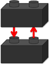
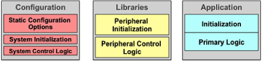
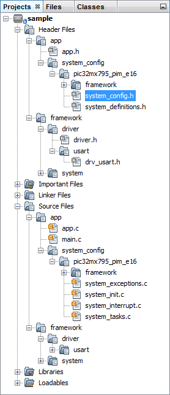

Microchip MPLAB® Harmony is the result of a holistic, aggregate approach to creating firmware solutions for embedded systems using Microchip PIC32 microcontrollers. As shown in the following diagram, MPLAB Harmony consists of portable, modular and compatible libraries provided by Microchip and third-party ecosystem partners. MPLAB Harmony also includes easy-to-use development utilities like the MPLAB Harmony Configurator (MHC) plug-in for the MPLAB X IDE, which accelerate development of highly capable and reusable PIC32 embedded firmware applications.
MPLAB® Harmony Block Diagram
Designed almost completely in the C language (see Note), MPLAB Harmony takes key elements of modular and object-oriented design, adds in the flexibility to use a Real-Time Operating System (RTOS) or work without one if you prefer, and provides a framework of software modules that are easy to use, configurable for your specific needs, and that work together in complete harmony.
 Note: Note: |
MPLAB Harmony has not been tested with C++; therefore, support for this programming language is not provided. |
Portability is a concern that is often overlooked when a silicon manufacturer provides software. However, breadth of solutions is a hallmark strength of Microchip, and MPLAB Harmony provides simple libraries to abstract away part-specific details and make a Microchip device easy to use, regardless of which device you choose. Any time you design a new product or update an existing one, cost must be balanced with capabilities; however, cost is more than just the bill of materials – it’s also the Non-Refundable Engineering (NRE) cost to design and develop your solution. MPLAB Harmony provides peripheral libraries, device drivers, and other libraries that use clear and consistent interfaces, requiring little or no change in your application code and minimizing the engineering time and effort for each new design.
The primary purpose of a MPLAB Harmony device driver (or "driver") is to provide a simple and highly abstracted interface to a peripheral, allowing your application (or any other module in the system) to interact with a peripheral through a consistent set of functions. A driver is responsible for managing access to a peripheral, so that requests from different modules do not conflict with each other, and for managing the state of that peripheral so that it always operates correctly.
A Peripheral Library (PLIB) is a simple access library that provides a consistent (but very low level) interface to a peripheral that is "on board" the MCU. PLIBs hide register details, making it easier to write drivers that support multiple microcontroller families, but they are not normally used by applications directly to interact with peripherals, as they provide little abstraction, and because they require the caller to manage the detailed operation of a peripheral (including preventing conflicting requests from other modules). Because of the lack of conflict protection in a PLIB, only one module in a system should directly access the PLIB for a peripheral. Therefore, PLIBs are primarily used to implement device drivers (and some system services) to make them portable.
MPLAB Harmony libraries are modular software "building blocks" that allow you to divide-and-conquer your firmware design. The interface to each library consists of a highly cohesive set of functions (not globally accessible variables or shared registers), so that each module can manage its own resources. If one module needs to use the resources of another module, it calls that module's interface functions to do so. Interfaces between modules are kept simple with minimal inter-dependencies so that modules are loosely coupled to each other. This approach helps to eliminate conflicts between modules and allows them to be more easily used together like building blocks to create the solutions you need.

The normal usage models of some of the more complex peripherals, (i.e., USB or network interfaces) require interpreting complex protocols or may require substantial additional processing to produce useable results, such as drawing graphical images on an LCD screen with an LCD controller peripheral. Therefore, while a device driver may be completely sufficient for a simple peripheral like a UART, some peripherals require what is frequently called "middleware" (aptly named because it sits between your application and the hardware abstraction_layer or "driver"_layer). MPLAB Harmony provides several middleware library "stacks" to manage these more complex peripherals and provide the functionality you need and expect.
MPLAB Harmony middleware "stacks" are usually built upon device drivers and system services so that they can be supported on any Microchip microcontroller for which the required driver or service is supported. However, special purpose implementations may be available that integrate the driver, certain services, and various modules within the "stack" for efficiency.
MPLAB Harmony system services are responsible for managing shared resources so that other modules, such as drivers, middleware, and applications, do not conflict on shared resources. For example, if the TCP/IP, USB, and Graphics stacks attempted to concurrently use the Timer2 peripheral to perform some periodic task, they would very likely interfere with each other. However, if instead they used a timer system service (as the following image illustrates), it is the responsibility of the system service to keep the separate requests from interfering with each other. The timer service can be configured as desired for a specific system (for example, you may decide to use Timer3 instead of Timer2) isolating the necessary changes to the configuration of a single module and preventing potential conflicts.
The use of a system service is very similar the use of a device driver, except that a driver normally requires the caller to "open" it to create a unique client-to-driver association. A system service does not normally require the caller to open the service before using it because system services are frequently shared by many clients within the system.

MPLAB Harmony modules (drivers, system services, and middleware – excluding PLIBs) are "active". This means when an application calls a module's interface function, the call will usually return immediately (unless a RTOS is in use) and the module will continue working on its own to complete the operation. Most modules will then provide a notification mechanism so the caller (i.e., client) can determine when the operation has finished.
Most MPLAB Harmony modules are implemented as cooperative state machines. The following image shows the basic idea of how this works. Each module has an "Initialize" function and each module has one (or more) "Tasks" function(s) to maintain its state machine(s). The state machines of all modules are initialized, shortly after the system comes out of reset in "main". After that (in a polled configuration, with no OS), the system drops into a "super loop" where each module's state machine function is repeatedly called, one after the other, to allow it to do the next "task" necessary to keep its state machine running. This allows the system to keep all modules running using a cooperative or shared "multi-tasking" technique. Modules (under control of your application) interact with each other by calling the interface functions of other modules (as illustrated in the following figure) and the system-wide "super loop" keeps all modules in the system running so they stay "active" and do their jobs.

This method is not suitable for all needs; therefore, other configurations are possible. However, a polled configuration is the simplest to understand and it best illustrates the basic concept of how MPLAB Harmony allows independent modules to operate cooperatively within an embedded system. To interact with each other, otherwise independent library and application modules make calls to each other's Application Program Interface (API) functions, as shown in the following diagram. Calls into a library are made through well-defined API functions and calls back to the client may be made through callback functions, statically linked (at build time) or dynamically registered at run-time and called using a function pointer.

The basic MPLAB Harmony model of cooperating state machine driven modules, when combined with a little configurability, becomes flexible enough to meet the needs of almost any embedded system. For example, if you are using multiple identical peripherals, MPLAB Harmony has "dynamic" driver implementations that can manage all instances of a peripheral with a single instance of the driver code. You might also have a need for multiple "client" modules to use the same instance of a peripheral at the same time (such as the timer example, described previously). To manage this need, MPLAB Harmony has driver implementations that are intelligent enough to manage requests from multiple clients. On the other hand, your needs may be simpler than that. So, static and single client implementations are also available for key libraries to help reduce the amount of code and data storage needed for your system.

Or, your system may need to combine several middleware stacks and multiple, potentially independent, applications. If that is the case, the simple polling operation, using the "super loop" method frequently seen in simple embedded systems may not be sufficient. Wwhen you start adding more modules, it becomes more and more difficult to meet the timing requirements of all peripherals using a simple polled super loop.
Fortunately, MPLAB Harmony modules are written so that (where appropriate) their state machines can be run directly from an Interrupt Service Routine (ISR) or a RTOS thread. Using an ISR allows you to eliminate the latency of waiting for the execution of other modules in the loop to finish before a time-critical event is serviced, and it allows you to use the interrupt prioritization capabilities available on Microchip devices to ensure that your system responds to events in the real world in real-time.

Additionally, the ability to schedule and prioritize different tasks for different modules can be obtained for modules that are not associated with a specific processor interrupt (such as many middleware modules and your application) using a RTOS. In fact, that is one of the main reasons to use a RTOS. When your system becomes complex enough that you start struggling to meet your timing requirements using the super loop method, it’s time to use a RTOS.
Fortunately, MPLAB Harmony module state machine functions can be called from a loop in a RTOS thread just as easily as they can be called from a polled "super loop" in a system without a RTOS. To allow this, modules are designed to be "thread safe" by calling semaphore, mutex, and critical section operations through an Operating System Abstraction_Layer_(OSAL). The OSAL provides a consistent set of functions to call, regardless of which RTOS is being used (or even if no RTOS is used). This method makes the choice of RTOS to use, if any, into a configuration option. MPLAB Harmony supports several OS and non-OS configurations and support for more operating systems is possible. All that is required is to implement the OSAL functions appropriately for the desired OS.
Most MPLAB Harmony libraries support a variety of build-time configuration options:
- Selection of the supported Microchip microcontroller
- Interrupt-driven or polled execution
- Static or Dynamic peripheral instance selection
- Single-client or Multi-client support
- Other library-specific options
MPLAB Harmony libraries are designed to allow you to select a variety of configuration options to tailor them to your specific usage. For example, you may be able to select buffer sizes for data transfer modules or clock sources for timer modules. The set of configuration options for each library is identified and explained in the Help documentation (along with the interface and usage information) and the MPLAB Harmony Configurator (MHC) utility is provided to help simplify the process of configuring your system exactly the way you want and to get you started with a set of initial source files for your project.
To facilitate configurability, MPLAB Harmony projects are normally structured in a way that isolates the code necessary to configure a "system" from the library code and from your application code, as shown in the following figure.

The next figure shows how application, library, and configuration files are organized within the MPLAB X IDE project.

In a MPLAB Harmony project, the main.c file is kept very simple and consistent (containing primarily, just the super loop previously discussed). The application files (app.c and app.h in the previous figure) are separate from configuration files in the system_config sub-folders, so it is possible for a single application to have more than one configuration. (Usage of this capability can be seen in example and demonstration projects included with the installation of MPLAB Harmony.) The library modules that make up the MPLAB Harmony framework (in the framework folder) use the definitions provided in the selected configuration header (system_config.h, highlighted with a gray background in the previous figure) to specify the configuration options you selected when you configured the project. Finally the processor-specific peripheral libraries are provided as both a prebuilt binary (.a linker file) and as in-line source code to allow for maximum build efficiency for your firmware projects.
MPLAB Harmony provides a complete framework for developing your firmware solutions using Microchip microcontrollers and development tools. The firmware libraries and tools that make up the MPLAB Harmony framework are modular and compatible, making them simple to use. They're flexible and configurable, making them easy to tailor to your specific needs. And, they're portable across the full range of Microchip PIC32 microcontrollers, so you are sure to find a supported device that meets your needs.
|
Name |
Description |
|
This topic describes the logic of the main.c file and the C language main function in a MPLAB Harmony project. | |
|
This topic describes the normal structure of MPLAB Harmony application files. | |
|
This section describes the files that make up a system configuration. |
|
MPLAB Harmony Help Template
|